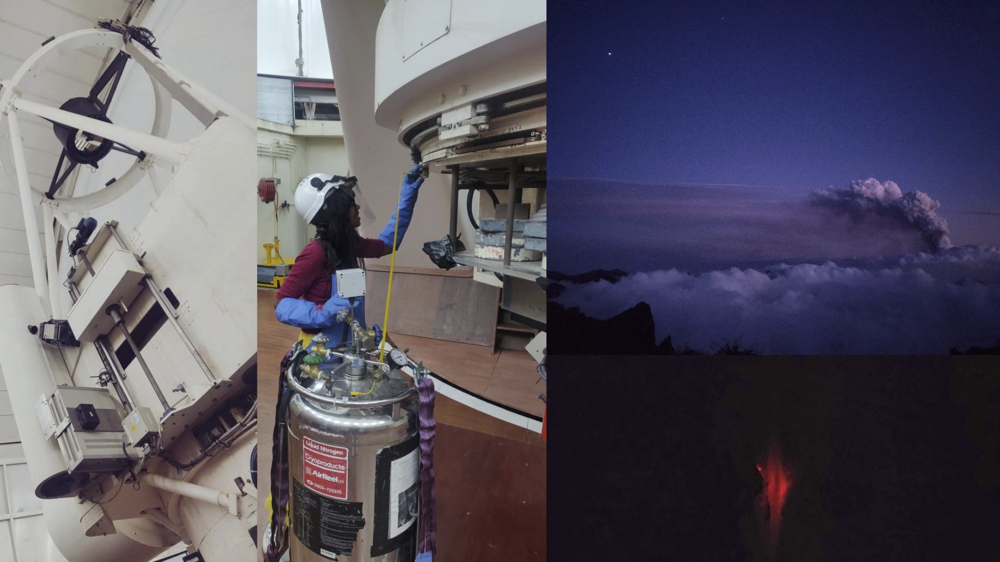
My first observing experience in La Palma when the Cumbre Vieja volcano was erupting. Three months later, I carried out more observations, and that went smoothly.
Galactic Archaeology, and Near-field cosmology
I am an observational astronomer working in Galactic archaeology,
using old and metal-poor stars to reconstruct how the Milky Way formed and evolved.
In the standard ΛCDM picture, galaxies like the Milky Way grew hierarchically
through the accretion and disruption of smaller galaxies. While the remnants of some
massive mergers are now well mapped, the smallest and oldest building blocks of the
Galaxy remain much harder to uncover.
My research focuses on these ancient systems—particularly
ultra-faint dwarf galaxies, globular clusters, and their stellar debris.
Their very metal-poor stars preserve the chemical signatures of the earliest generations
of stars, while disrupted systems form stellar streams that retain a dynamical record of
the Milky Way's assembly history.
I am especially interested in the outer Galactic halo, where ancient
accretion debris can remain coherent for billions of years. I combine wide-field imaging,
Gaia astrometry, spectroscopy, and chemo-dynamical modelling to discover and characterize
metal-poor stars and stellar streams. Through them, I aim to understand the properties of
the first stars and galaxies, reconstruct the population of destroyed dwarf galaxies, and
use stellar streams as sensitive probes of the distribution and small-scale structure of
dark matter.
Journey to the Galactic Outskirts
Based on Viswanathan et al. 2026. I map the distant Milky Way halo
using metal-poor red giant stars, tracing its structure and chemistry
out to more than 100 kpc from the Sun.
Using the Pristine survey and Gaia XP spectrophotometry, I constructed
large catalogues of red giant stars with photometric metallicities and
distances. I find that the outer halo becomes increasingly metal-poor
with distance, with very metal-poor stars making up around 40–50% of
the population beyond 50 kpc. Combining chemistry with stellar motions
also reveals distant remnants of past accretion events, including a
population of very metal-poor stars associated with the Pisces Plume
and the Magellanic system.
See also Bayer, Starkenburg, AV et al. 2026,
where we use distant red giants stars to probe the Sagittarius stream's
spur feature at 90 kpc.
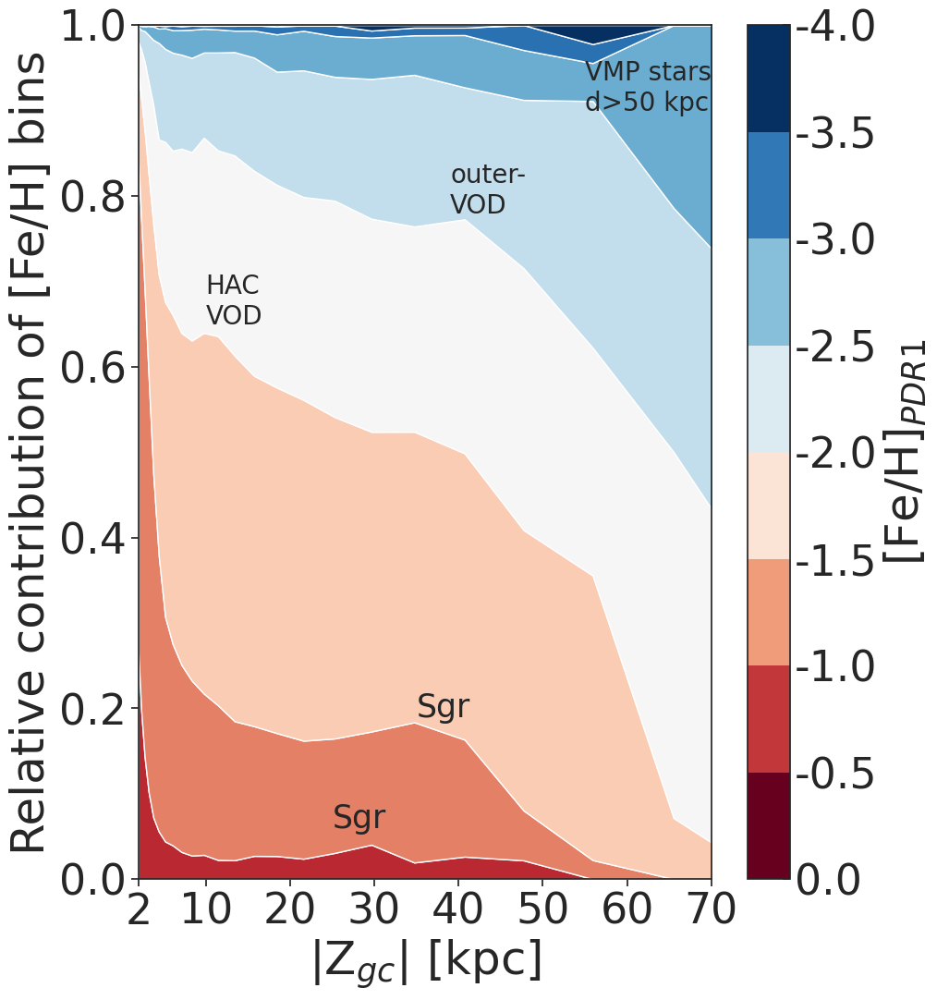
A Slow Spin to Win: The Birth of the Milky Way Disc
Based on Viswanathan et al. 2025b (facilitated through a CCA visiting pre-doctoral program in New York).
I use the chemistry and motions of old stars
to investigate how the early, chaotic Milky Way evolved into the rotating disc
we see today.
Combining metallicities and alpha-element abundances from Gaia XP spectra with
kinematics from Gaia DR3, I traced how the rotation of the ancient high-alpha
population changes with metallicity. I find that the early Milky Way did not
suddenly transition into a rapidly rotating disc. Instead, it gradually spun up
as the Galaxy became more metal-rich, connecting the kinematically hot
proto-Galaxy to the old Milky Way disc.
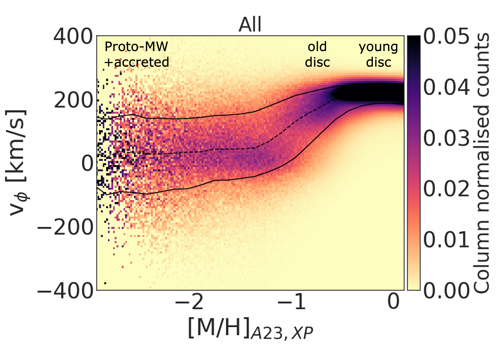
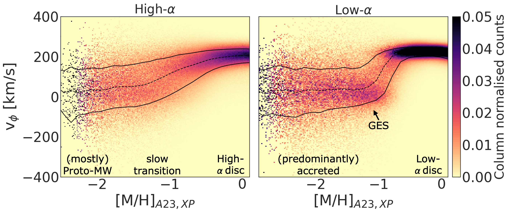
The Very Metal-Poor Galaxy
Based on Viswanathan et al. 2025a. I use metal-poor stars to trace the
ancient building blocks of the Milky Way and study how they are distributed
across the Galactic halo.
Using the Pristine–Gaia synthetic catalogue, I selected bright and distant
very and extremely metal-poor red giant stars and followed them up
spectroscopically with the Isaac Newton Telescope. The resulting sample
traces metal-poor stars across the disc, inner halo, and outer halo, allowing
me to connect their chemistry and dynamics to remnants of past accretion
events. This work also uncovered three new bright members of the extremely
metal-poor C-19 stellar stream, extending our view of one of the most
ancient stellar structures in the Milky Way.
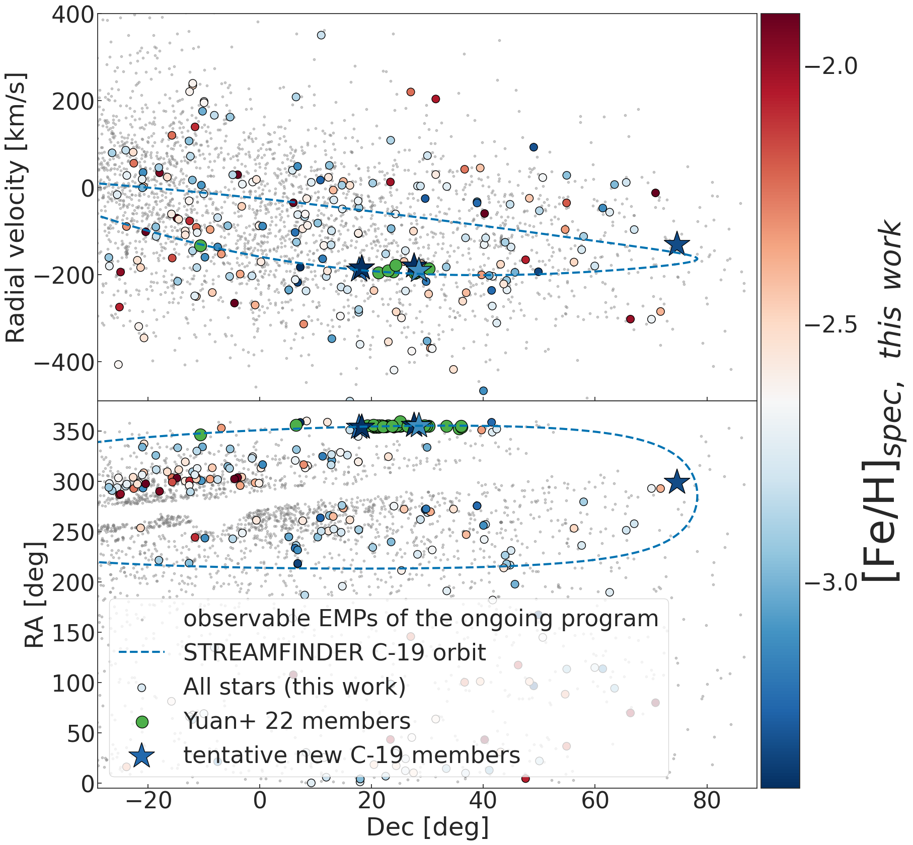
Gaia's Brightest Very Metal-Poor Stars
Based on Viswanathan et al. 2024. I take spectra from Gaia's Radial Velocity Spectrometer and look for very metal-poor stars in them.
I leverage the exceptional dataset from Gaia Data Release 3, featuring about one million spectra captured by the Radial Velocity Spectrometer in the Calcium II triplet region. I analysed and published a catalogue of approximately 1000 bright VMP stars across the entire sky. This catalog is three times larger than the existing collection of well-studied VMP stars in the literature within this magnitude range, making it a valuable resource for high-resolution spectroscopic follow-up and for exploring the properties of VMP stars across various regions of our Galaxy.
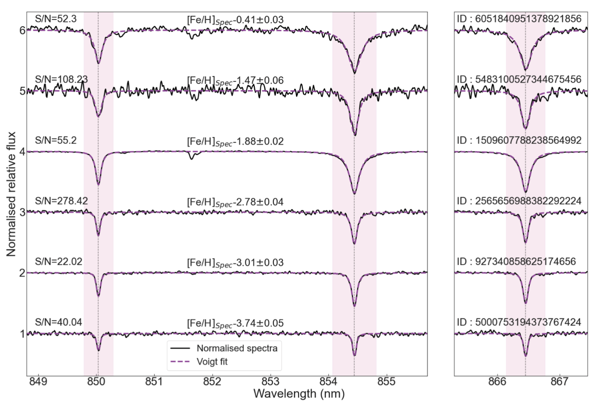
Reduced Proper Motion Selected Halo
Based on Viswanathan et al. 2023. I select about 50 million stars with high tangential velocity from Gaia Data Release 3 using the reduced proper motion parameter.
In this work, I select halo main sequence stars using Gaia DR3 proper motion and photometry information, the combination of which renders the reduced proper motion parameter. This parameter allows us to pick out high tangential velocity main sequence stars in halo orbits. Our sample reaches out until about 21 kpc, thereby probing much further out than would be possible using reliable Gaia parallaxes.
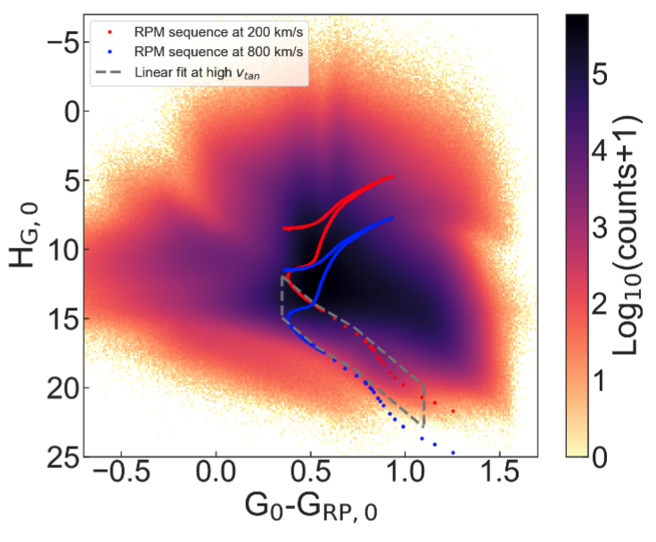
Complex Morphology of Stellar Streams
Based on Viswanathan et al. 2023. I study the complex morphology of streams such as GD-1, Jhelum and Sagittarius.
Binned velocity moments on the star map of the reduced proper motion halo in the latitude, longitude and pseudo-azimuth directions pop up several known and unknown tidal streams in the local halo. We find and characterise the stellar streams GD-1, Jhelum, Phlegethon and part of Sagittarius and characterise them in more detail. For these streams, we resolve the gaps and density breaks reported in the literature more clearly.
As an example case, we study the two components of the Jhelum stream in detail (Awad, Canducci, Balbinot, AV et al. 2024). The narrow component is kinematically cold while the broad component is kinematically hot, suggesting that Jhelum may have originated from a globular cluster within a dwarf galaxy, providing valuable insights into the Milky Way's merger history. Thus, faint signs of disequilibrium in the form of kinks and density variations in these thin streams can paint a more detailed picture of the dark matter sub-haloes that perturb them and the mass distribution of our Galaxy.
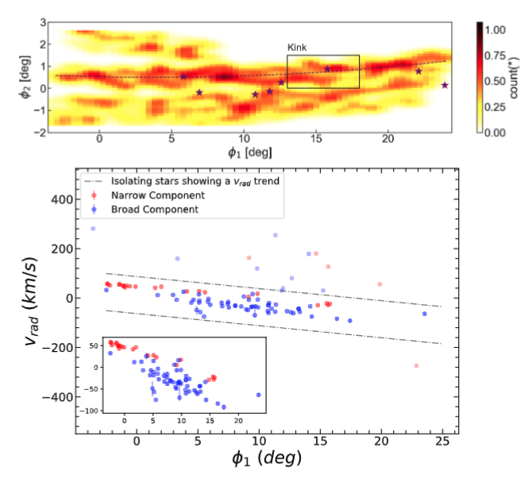
Other Astronomy lead author papers
Some papers outside of my immediate expertise!
Based on Ellison, Viswanathan et al. 2019. Using CFIS and SDSS imaging, I investigated whether galaxy mergers trigger AGN by comparing optical and mid-infrared AGN with mass- and redshift-matched non-AGN controls. I found that AGN hosts are about twice as likely to show signs of ongoing or recent interactions, with the excess increasing with AGN luminosity and host stellar mass.
Based on Boettner, Viswanathan & Dayal 2024. We used Gaia data to classify 2.4 million potential PLATO target stars into the Milky Way thin disk, thick disk, and stellar halo, and predicted the exoplanet populations PLATO could detect in each environment. We also produced a public catalogue of these classified targets, including dedicated samples of metal-poor halo stars for future exoplanet searches.
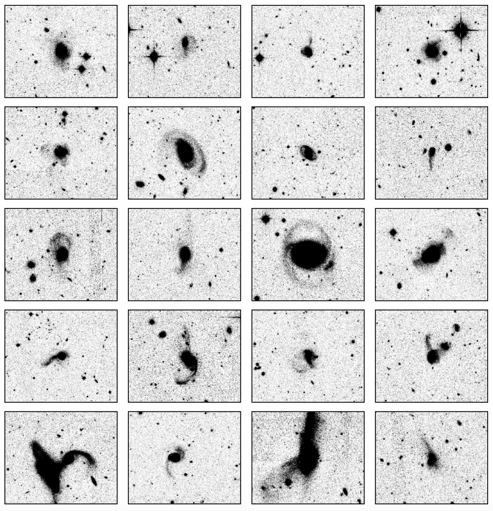
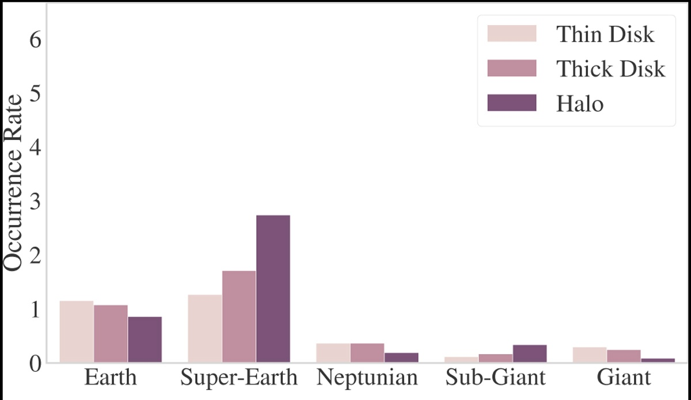
Physics and Engineering Research
Indian Academy of Sciences Research Fellowship, Summer 2017: I designed a high current, high frequency pulsar for the excitation of whistler waves with G. Ravi at the Institute for Plasma Research, India. I used a linear device built in the laboratory to simulate conditions similar to the upper ionosphere and designed a DC pulsar to fire the antenna for microsecond timescales with high current inside the pulsed plasma.
Bachelor thesis, Spring and Summer 2019: I worked on a low-profile modified loop antenna for WMTS bands and a frequency-reconfigurable tri-band miniaturized antenna for WBAN applications. The final antenna uses PIN diode switching to achieve frequency reconfigurability and operates at GPS, ISM1 and ISM2 frequencies.
Master thesis, Spring and Summer 2020: During my MSc at the University of Glasgow, I studied how gravitational lensing can affect gravitational-wave signals from merging binary black holes. I used Bayesian parameter estimation to investigate how ignoring lensing can bias the inferred properties of the source.
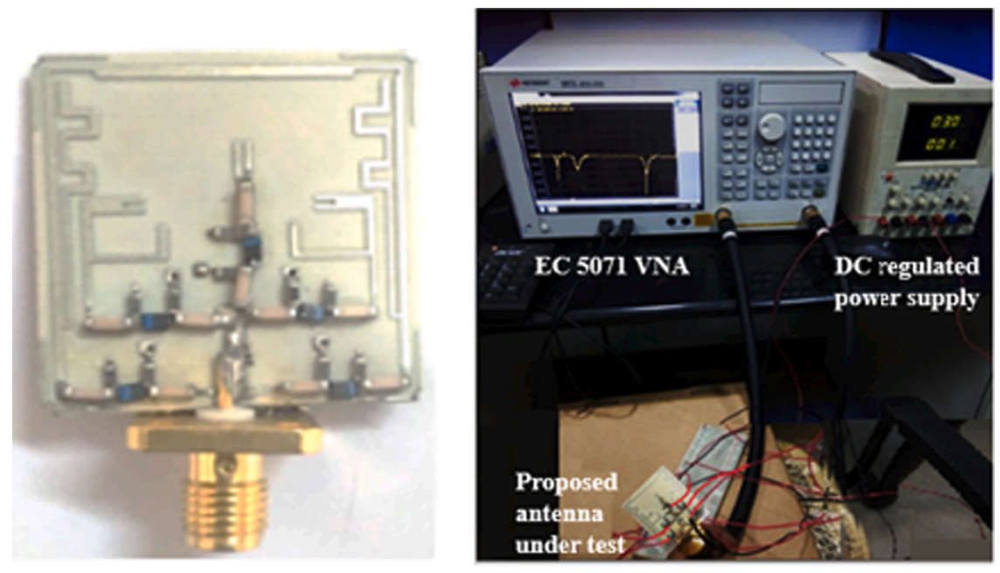
Collaborative Work & Observing Programs
My collaborative work spans metal-poor stars, stellar streams, the Galactic halo, and the early Milky Way.
I am a co-author on 23 refereed publications and have led or contributed to observing programmes with
Gemini, Magellan, VLT, INT, Subaru, and CFHT.
Observing highlights: PI of 34.1 hr with Gemini/GHOST (ranked 1/35) to uncover the oldest stellar remnants of the Magellanic Stream;
PI of 17.1 hr with Gemini/GHOST (ranked 3/41) targeting pristine relics of the first stars;
and PI of a 38-night INT/IDS programme (ranked 2/7) studying metal-poor stars and stellar streams.
Selected co-authored works:
Collaborations & Software
I am an executive member of the Pristine Survey (2020–present), and an active member of
WEAVE Galactic Archaeology, UNIONS/ESA Euclid,
STREAMFINDER, and the GHOST Ultra-Faint Legacy Survey (GHOULS).
I was also an early-career scientist in the Early Milky Way ISSI Team (2022–25),
and maintain a research affiliation with NRC Canada's Herzberg Astronomy and Astrophysics Research Centre.
Software: I am a main contributor to
Spectroscopy Made Hard(er) – SMHR-Ghouls,
developed for stellar spectroscopic analysis within the GHOULS collaboration. My research software stack also
includes Python, C++, AGAMA, gala, galpy, FERRE, MOOG, Korg, pySME, JAX/NumPyro, pandas, polars, vaex, and TOPCAT.